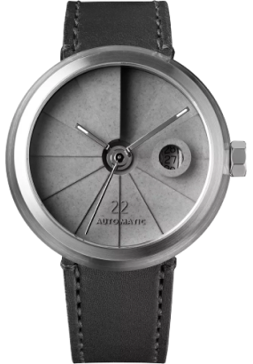

popular
Model

son22
The watch also features a tough and durable sapphire crystal glass and comes with a Swiss SW200-1 automatic winding movement that has a power reserve.

sw12
The watch also features a tough and durable sapphire crystal glass and comes with a Sw12-1 automatic winding
Anatolii Bronishevskyi
Seo&Founder
The company of the new-design watch was founded by Anatolii Bronishevskyi in th 2019 year and after that watch are the best way for famous people
More
Info
Product Decription
Inspired by the WWI trench watch, this timepiece has a contemporary design with an urban style and a vintage soul. The 22 Design Studio Concrete Sector Watch reinterprets the old timepiece with a concrete dial. Handmade in Taiwan, the dial is cast in one piece using the béton technique more detailed